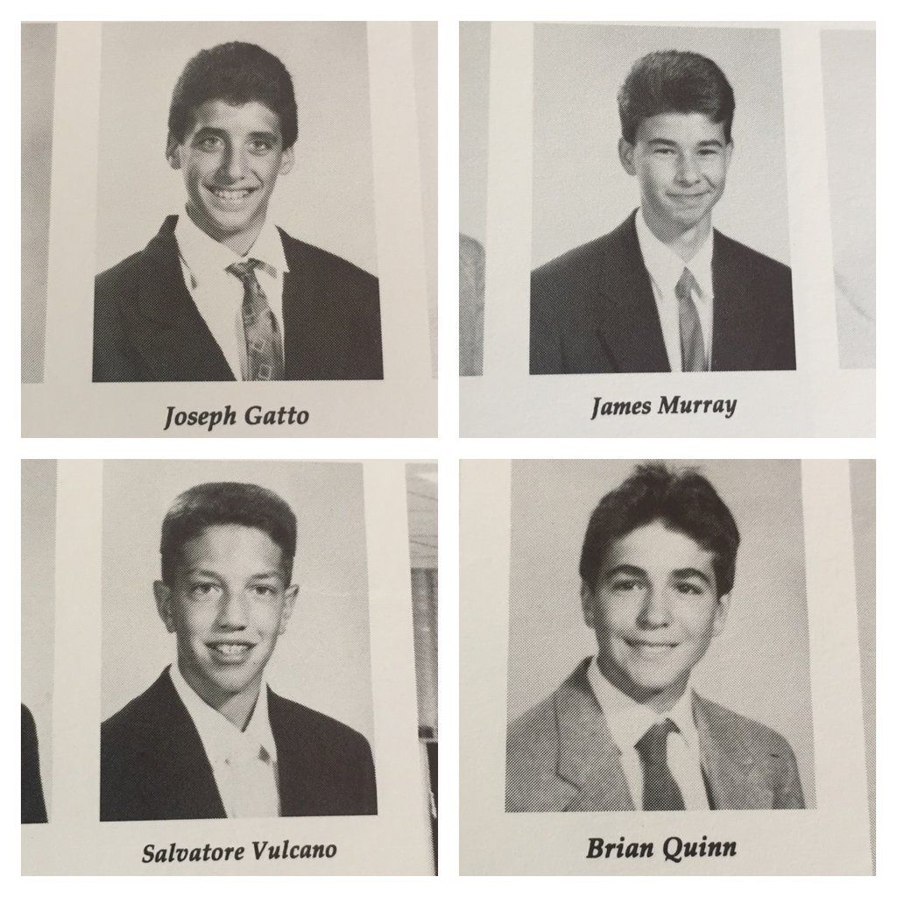

It's a show about 4 guys who are in their late 30's to early 40's. They have been best friends since high school.
They are part of a comedy group called the Tenderloins who keep touring between episodes and seasons. They had an idea for a hidden camera show but instead of the joke being on the public the joke is on them instead. In each episode they go though differnt challanges with an in ear piece so the other 2 or 3 (behind the scenes) guys can give them directions on what to do.

A lot of the episodes are in and around New York city wether it's in an office building showing a group of people a presentation that the other guys have created. Or posing as a receptionist checking people into their focus groups but with completely ridiculous names that they have to call out that have been made up by the other guys. They have also posed as cashiers at fast food retaurants whilst they are getting the customers food, the joker has to do and say what ever they say. Weather they go around shopping malls and parks going up to complete strangers saying things and repeating what to do. Some other locations that they have filmed at have been the Empire State building and Madame Tussauds.